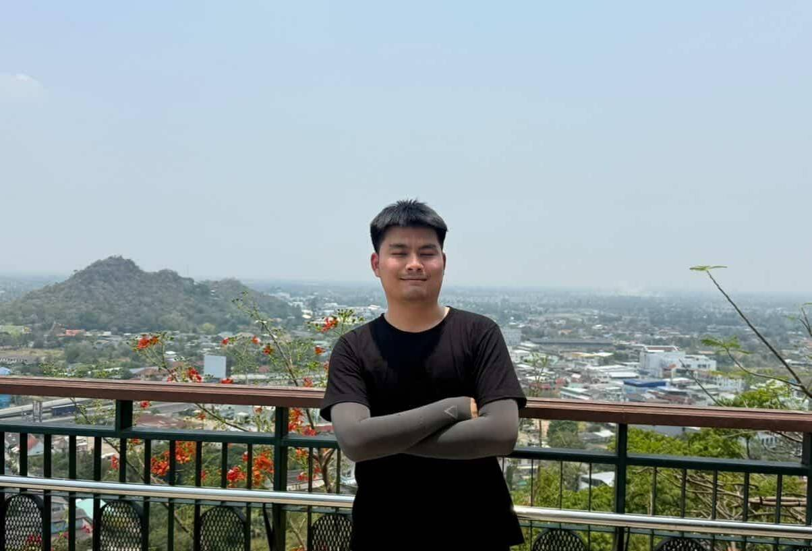
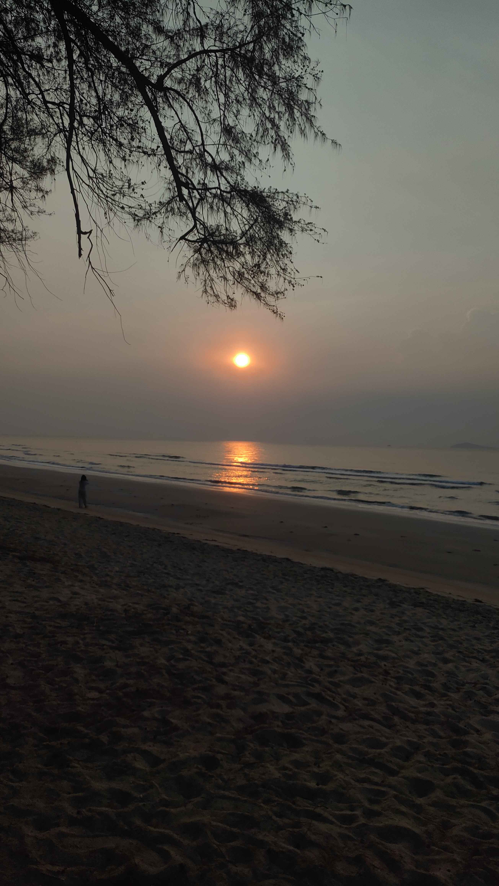
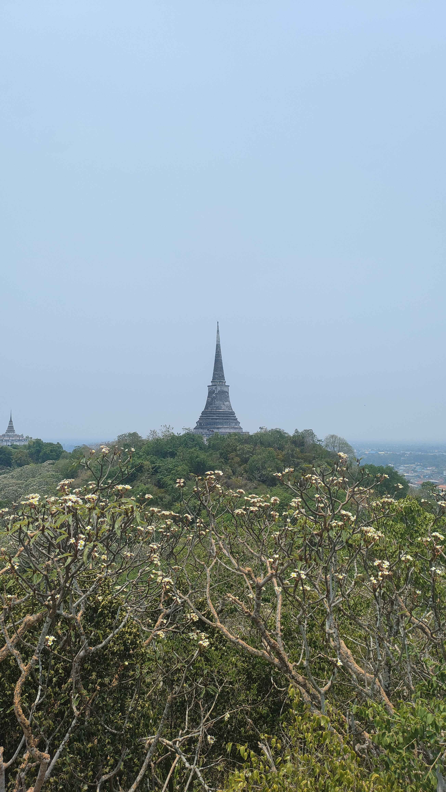

ผมชื่อ คุณานนต์ เอื้อจิระพงษ์พันธ์ มีชื่อเล่นว่า นนต์ นะครับ
ผมเป็นนักศึกษาชั้นปีที่ 3 สาขาวิชาภูมิศาสตร์ คณะสังคมศาสตร์ มหาวิทยาลัยศรีนครินทรวิโรฒ

สิ่งที่ผมชอบทำคือการถ่ายรูปวิวต่างๆและการได้เรียนรู้อะไรใหม่ๆครับ เพราะอะไรรู้มั้ยครับ เพราะการที่เราได้ทำอะไรในสิ่งที่ไม่เคยทำมันมีทั้งความท้าทายและการคาดเดาอะไรไม่ได้อยู่ไงครับ ซึงมันทั้งสนุกและบ้ามากๆเลยแหละครับ เพราะเรากำลังทำอะไรที่เราไม่เคยรู้ ไม่เคยทำ
หวังว่าทุกคนจะสนุกและใช้ชีวิตที่เป็นในแบบของเราได้อย่างเต็มที่นะครับ ขอให้ทุกคนที่เข้ามาอ่านได้มีโอกาสได้ลองทำในสิ่งใหม่ๆดูนะครับ
ยินดีที่ได้แนะนำตัวให้ทุกคนฟังนะครับ

